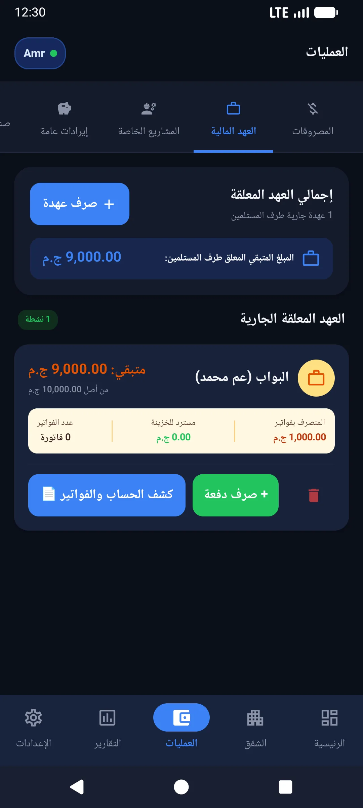
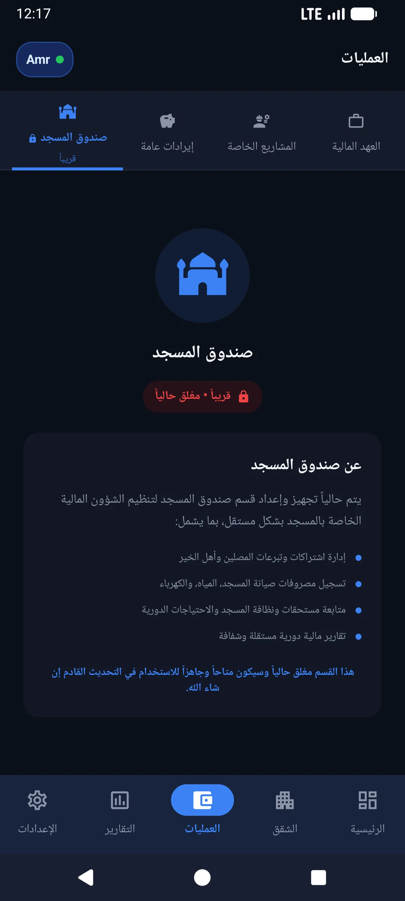

الخزائن المالية والعهد النقدية
إدارة عهدة البواب، تعدد الخزائن، وصندوق مسجد العمارة بكل انضباط
تسليم مبالغ نقدية لحارس العمارة لشراء أدوات نظافة أو سداد فواتير فورية غالباً ما ينتهي بفقدان الفواتير والشكوك. تطبيق صندوق العمارة يوفر لك شاشة مخصصة لعهدة البواب، وإمكانية إنشاء أكثر من خزينة، وفصل تبرعات مسجد العمارة عن أموال الصيانة العامة.

واجهة إدارة العهدة وتسوية فواتير المشتريات النثرية
أزمة العهدة النقدية ومصاريف البواب اليومية
في كل عقار سكني، يحتاج الحارس إلى مبالغ دورية لنظافة السلالم، وشراء لمبات الإضاءة، وأكياس القمامة، وبنزين المولد إن وجد. التحديات الشائعة:
- تراكم الفواتير والقصاصات الورقية: يقدم البواب أوراقاً غير مرتبة بعد أسابيع يصعب مطابقتها مع ما استلمه نقداً.
- خلط أموال العهدة براتبه الشخصي: عدم وجود حساب مستقل للعهدة يجعل الحارس يخلط بين مصروفات المبنى وأمواله الخاصة.
- صعوبة إقناع السكان بمصاريف النثريات: عندما تذكر في الاجتماع "مصاريف نثريات 500 جنيه"، يطالب السكان بتفاصيل كل قرش تم صرفه.
كيف يعمل نظام العهدة في تطبيق صندوق العمارة؟
صُمم نظام العهدة في التطبيق ليجعل عملية التسوية في غاية الوضوح:
- صرف العهدة: يقوم أمين الصندوق بتسليم البواب مبلغاً (مثلاً 1,000 جنيه)، وتسجيله فوراً كـ "صرف عهدة لحارس العقار".
- تسجيل المشتريات اليومية: كلما أحضر البواب فاتورة أو إيصال شراء، يسجلها أمين الصندوق مخصومة مباشرة من رصيد عهدة البواب.
- التسوية التلقائية: يُظهر التطبيق الرصيد المتبقي بيد البواب في أي لحظة بدقة تامة.
- إعادة تعبئة العهدة: عند انتهاء الرصيد، تُصرف دفعة جديدة وتُرحل العمليات القديمة في السجل المالي الموثق.
تعدد الخزائن والتحويلات الداخلية
لا تقتصر الحسابات على خزينة واحدة في العمارات الكبيرة أو المجمعات الصغيرة:
- الخزينة النقدية الرئيسية (الكاش): النقدية الفعلية الموجودة في خزينة العمارة أو مع أمين الصندوق.
- حسابات البنوك وإنستاباي (InstaPay): تتبع الأموال المحولة إلكترونياً من السكان دون خلطها بالكاش.
- صندوق مسجد أو مصلى العمارة: تخصيص حساب منفصل لتبرعات واشتراكات ومصروفات المسجد لضمان النزاهة الشرعية والمحاسبية.
- التحويل بين الخزائن: تحويل أي مبلغ من خزينة لأخرى بنقرة واحدة مع توثيق وقت ورقم العملية والملاحظات.

وداعاً لضياع فواتير البواب وخلافات العهدة
اضبط كل جنيه يخرج من الصندوق وسوّي عهدة الحارس بمنتهى الشفافية من هاتفك مباشرة.